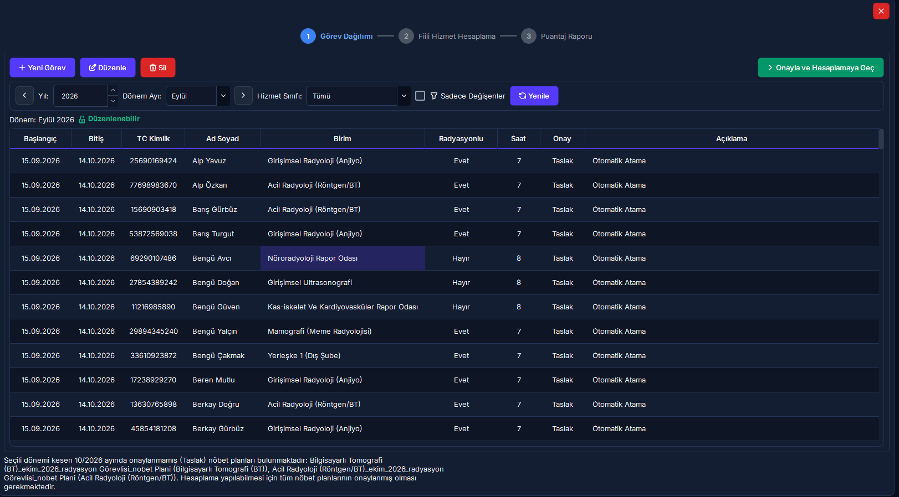
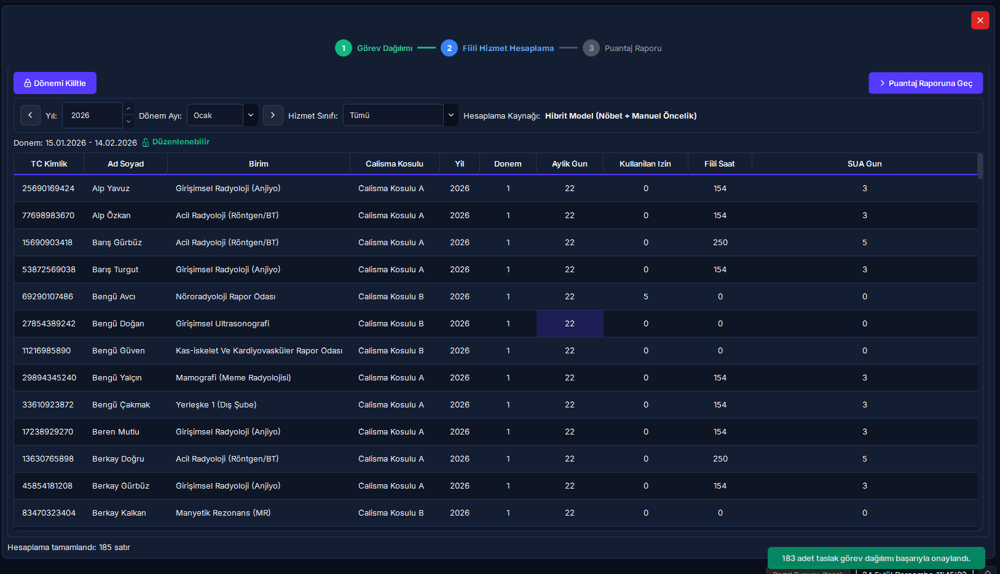
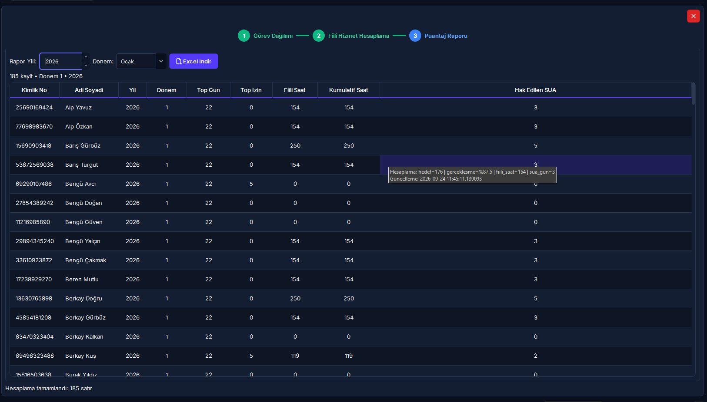
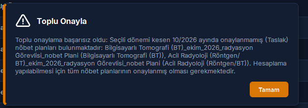

Fiili Hizmet ve Şua Hesaplama (FHZ)
Bu modül; radyoloji ve nükleer tıp çalışanlarının 5510 Sayılı Kanun kapsamındaki Fiili Hizmet Süresi Zammı (FHZ / Yıpranma Payı) puantajlarını ve Sağlık Bakanlığı'nın mevzuat baremlerine göre Sağlık İzni (Şua İzni) hakedişlerini 3 adımlı entegre bir sihirbaz üzerinden yönetir. Personellerin çalıştığı radyasyonlu birimlere, nöbet çizelgelerine ve resmi onaylı izinlerine göre net fiili çalışma saatlerini, yıpranma sürelerini ve yıllık Şua günlerini hesaplayıp kilit altına alır.
Vizyonder Hızlı Karar Reçetesi (4 Adımda FHZ & Şua Sihirbazı)
15-14 SGK döneminde varsayılan birimler otomatik hazır gelir. Sadece rotasyon veya geçici görevi olan personeli güncelleyip [1. Görev Yerlerini Onayla ve Hesaplamaya Geç] butonuna basın.
Radyasyonlu birimdeki her 50 tam fiili çalışma saati için 1 gün Şua izni hesaplanır; [2. Hesaplamayı Kaydet, Kilitle ve Rapor Çıktısına Geç] butonuyla tek tıkla kaydedilip dönem kilitlenir.
Resmi puantaj cetveli hazır açılır; [3. Rapor Çıktısı Al (Excel / PDF)] ile indirilir ve [4. Tamamla ve Kapat] ile süreç tamamlanır.
Temel Eşikler & Yasal Baremler
Sağlık Bakanlığı baremleri gereğince personelin fiilen radyasyon alanında çalıştığı her 50 saat için 1 tam gün Şua izni hakedilir.
Personel ne kadar fiili çalışma yaparsa yapsın, bir takvim yılı içinde kazanılabilecek Şua İzni azami 30 gün ile sınırlandırılmıştır.
Koşul A (7.0s radyasyon, Şua hakkı var) ile Koşul B (8.0s idari/destek, Şua hakkı yok) kurumsal rejimlere göre tam ayrıştırılır.
SGK 5510 standardı uyarınca her ayın 15'i ile bir sonraki ayın 14'ü arası hesaplanır. Ayarlar sekmesinden esnetilebilir.
3. 4 Adımlı Doğrusal Puantaj Sihirbazı İş Akışı
İzin Yönetimi Ekranından Resmi Onay Veriniz"] G -->|Hayır| I["Hesaplama Motoru: Koşul A 7s / Koşul B 8s"] I --> J["İzin Düşümü & Net Fiili Radyasyon Saati"] J --> K["Şua Gün Hesabı: Her 50s = 1 Gün, Maks 30 Gün"] K --> L["2. Hesaplamayı Kaydet, Kilitle ve Rapor Çıktısına Geç"] L --> M["3. Adım: Rapor Çıktısı Al (Excel / PDF)"] M --> N["4. Adım: Tamamla ve Kapat"]
4. 5N1K Kural ve Arayüz Bileşen Envanteri
Ekran Konumları ve Görsel Rehber




Adım Adım İşlem Rehberi
1. Adım: Görev Yerlerini Kontrol Etme ve Onaylama
- Sol ana menüden [Fiili Hizmet ve Şua] modülüne tıklayın.
- Sihirbaz göstergesinde 1. Görev Yerlerini Onayla sekmesinde olduğunuzu doğrulayın.
- [Yıl] ve [Dönem] kutularından SGK bordro dönemini seçin. Tüm personelin varsayılan çalışma birimleri otomatik olarak listeye hazır gelir.
- Farklı bir birimde geçici çalışan personelleri süzmek için [Sadece Görev Yeri Değişenler] kutusunu işaretleyebilirsiniz.
- Nöbet listesi dışında farklı bir birimde görevlendirilen veya rotasyona çıkan personel varsa satırı seçip [Görev Yerini Değiştir] (veya ek görev için [Rotasyon / Ek Görev Ekle]) butonuna tıklayarak tarih aralığı, birim ve günlük çalışma saatini (0-24s) kaydedin.
- Sağ üstteki [1. Görev Yerlerini Onayla ve Hesaplamaya Geç] butonuna tıklayarak doğrudan 2. adıma ilerleyin.
2. Adım: Fiili Hizmeti Hesaplama, Kaydetme ve Dönemi Kilitleme
2. Fiili Hizmeti Hesapla ekranında seçili dönemin iş günü, resmi tatil ve personelin nöbet/görev saatleri harmanlanarak tablo otomatik hesaplanır:
- Çalışma Koşulu: Radyasyonlu alanda çalışan personelde
Koşul A(7.0 saat), izlenen/idari alandakilerdeKoşul B(8.0 saat) olarak listelenir. - Brüt İş Günü & İzin Düşümü: Ay içi mesai günleri hesaplanır; personelin resmi onaylı izinleri düşülerek net çalışma günleri gösterilir.
- Net Fiili Çalışma Saati: Fiilen radyasyonlu alanda icra edilen nöbet ve mesai saatlerinin net toplamıdır.
- Hesaplanan Şua İzni (Gün): Her 50 fiili radyasyon saatine 1 gün olarak hesaplanır (Yıllık 30 gün tavanı aşıldığında sistem otomatik tavan kısıtı koyar).
Eğer dönem içinde radyasyon görevlilerine ait henüz resmi onayı tamamlanmamış (taslak veya ön onaylı) izinler varsa sistem yasal hatayı önlemek adına hesaplamayı durdurur. Bu durumda İzin Yönetimi sayfasına geçerek izinlere resmi onay verdikten sonra hesaplama ekranına dönünüz.
Sonuçlar doğrulandığında sağ üstteki [2. Hesaplamayı Kaydet, Kilitle ve Rapor Çıktısına Geç] butonuna tıklayın. Sistem hesaplamayı kaydeder, dönemi kilitler, yayındaki nöbet planlarını arşivler ve sizi doğrudan 3. adıma aktarır.
3. Adım: Rapor Çıktısı Alma & 4. Adım: Tamamla ve Kapat
3. Rapor Çıktısı Al sekmesinde SGK ve mutemetlik onaylı nihai icmal tablosu hazır olarak açılır. Sağ üstteki [3. Rapor Çıktısı Al (Excel / PDF)] butonuna basarak resmi bildirim cetvelini bilgisayarınıza aktarın ve [4. Tamamla ve Kapat] butonuyla işlemi sonlandırın.
Yılın 12 dönemi de tamamlandıktan sonra, Sistem Yöneticisi (Admin) tarafından 2. adımdaki [Yılı Kilitle] butonuna basılarak tüm yıl dondurulur ve Şua izinleri İzin Modülü'ne aktarılmak üzere kesinleştirilir.
Web Portalı Şua Karnesi & Risk Seviyeleri
Masaüstü Uygulaması (Yetkili Merkez)
- 3 adımlı sihirbaz akışı ile görev dağılımı ve onaylama
- Otomatik görev atama ve özel tarihli görevlendirme girişi
- Onaysız izin güvenlik bariyeri ve otomatik düşümler
- Sıralı dönem kilidi ve Admin yetkili yıllık kilitleme
- SGK formatında Excel ve PDF puantaj rapor dökümü
Web & Mobil Portal (Şua Karnesi & Risk İzleme)
Personeller ve idareciler tarayıcı üzerinden Personel Şua Karnesi paneline erişerek radyasyon yükünü takip eder:
FHZ, Şua İzni & Mit Avcısı (Kritik Kurallar)
"Yıl boyu çok yoğun nöbet tutan personelin 1.800 saat fiili çalışması varsa 36 gün Şua İzni kullanabilir."
Sağlık Bakanlığı baremleri ve Danıştay içtihatları gereğince bir takvim yılında kazanılabilecek azami Şua İzni 30 gündür. 30 günü aşan hesaplamalar mevzuat tavanına sabitlenir.
"Personel yıllık izinli veya sağlık raporlu olduğu günlerde de Fiili Hizmet Zammı (yıpranma) kazanmaya devam eder."
5510 Sayılı Kanunun 40. maddesi uyarınca yıpranma payı yalnızca personelin radyasyon kaynağıyla fiilen çalıştığı günler için verilir. İzin ve rapor günleri puantajdan kesinlikle düşülür.
"Aylık dönemleri tek tek kilitlemeye gerek yoktur; yıl sonunda doğrudan yıllık kilit yapılabilir."
SGK bildirim bütünlüğü gereği dönemler atlanarak kilitlenemez. RADPYS kural motoru, bir önceki ay kilitlenmeden cari ayın kilitlenmesine kesinlikle izin vermez.
Sıkça Sorulan Sorular ve Kritik Kilitler
Soru 1: Bir dönemi kilitlemek istediğimde "Bir önceki dönem kilitlenmeden bu dönem kilitlenemez" hatası alıyorum. Neden?
Mevzuat ve SGK denetim bütünlüğü gereğince dönemler atlanarak kilitlenemez. Önceki aylara ait eksik puantajların tamamlanıp kilitlenmesi zorunludur. Geçmiş ayları sırasıyla kilitleyerek cari aya ulaşabilirsiniz.
Soru 2: Personelin o yılki fiili radyasyon çalışması 1.800 saat (36 gün Şua) çıktı, fakat sistem 30 gün yazdı. Bir hesaplama hatası mı var?
Hayır, bu bir hata değildir. Sağlık Bakanlığı'nın mevzuat baremleri uyarınca bir takvim yılı içerisinde kazanılabilecek Şua İzni toplamı azami 30 gün ile sınırlandırılmıştır. 30 günü aşan kısımlarda sistem yasal tavan kısıtını uygular.
Soru 3: Yıllık Kilidi Kapat butonunu neden göremiyorum veya tıklayamıyorum?
Yıllık kilit işlemi, geçmişe dönük tüm puantajı ve Şua hakedişlerini kalıcı olarak dondurduğundan (RED-09 emniyet kilidi), yalnızca Sistem Yöneticisi (Admin) veya Süpervizör rolüne sahip kullanıcılar tarafından yürütülebilir.